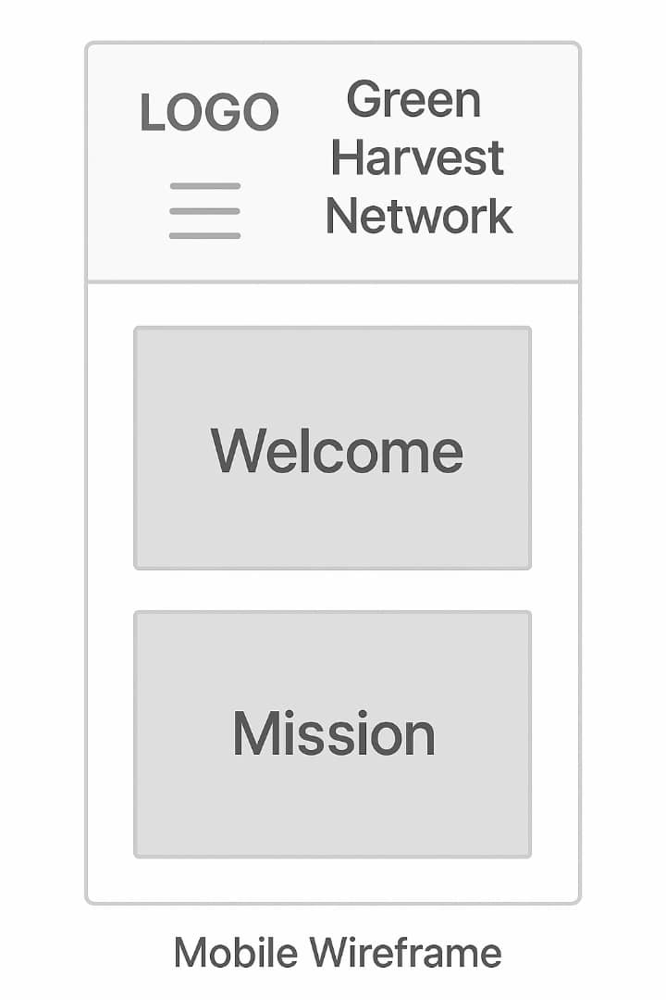
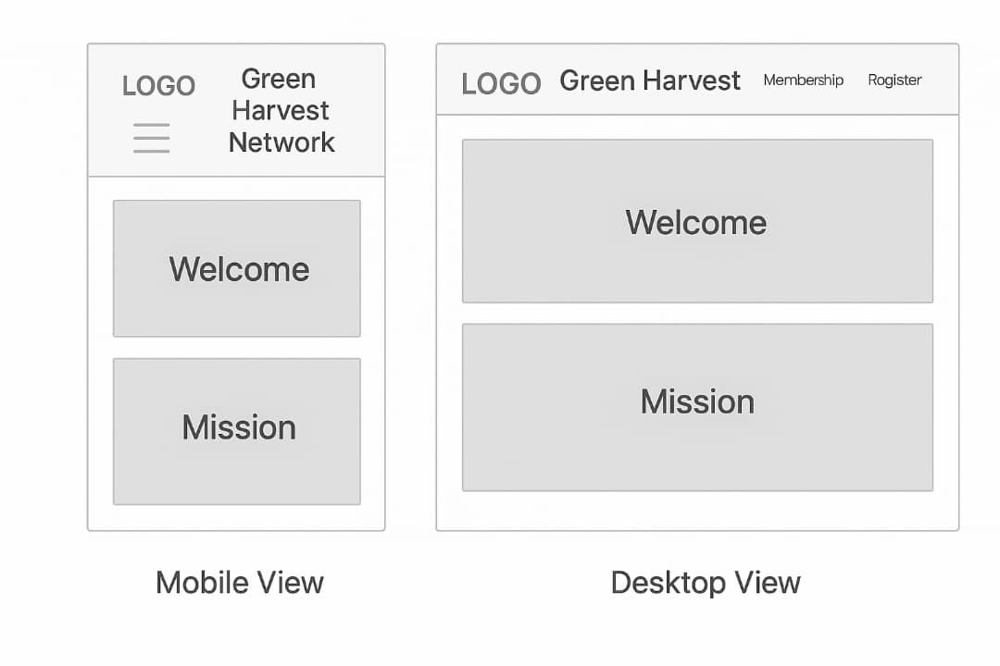

Site Name
Green Harvest Network is the name of the site. This name was chosen because it symbolizes sustainable farming, growth, and collaboration among agricultural communities.
Site Purpose
The purpose of this website is to empower farmers and agricultural enthusiasts by providing a community-driven platform for connection, knowledge-sharing, and resource access. The site also encourages membership and provides an opportunity to earn through farming promotion and collaboration.
Scenarios
- How can I connect with other farmers to share ideas and best practices?
- What benefits do I get from joining the Green Harvest Network as a member?
Color Schema
- Green (#4CAF50): Used for headers, buttons, and branding elements to represent agriculture and freshness.
- Brown (#795548): Used for buttons, accents, and footer to reflect soil, farming, and earthiness.
- Light Grey (#f4f4f4): Used as the background for better readability.
Typography
- Arial, sans-serif: Used for body text for readability and clean appearance.
- Georgia, serif: (Optional) May be used in future for block quotes or special callouts.
Wireframe
Mobile View
Desktop View
(Note: These wireframes are sketches that visually represent how the home page layout will look on mobile and desktop screens.)